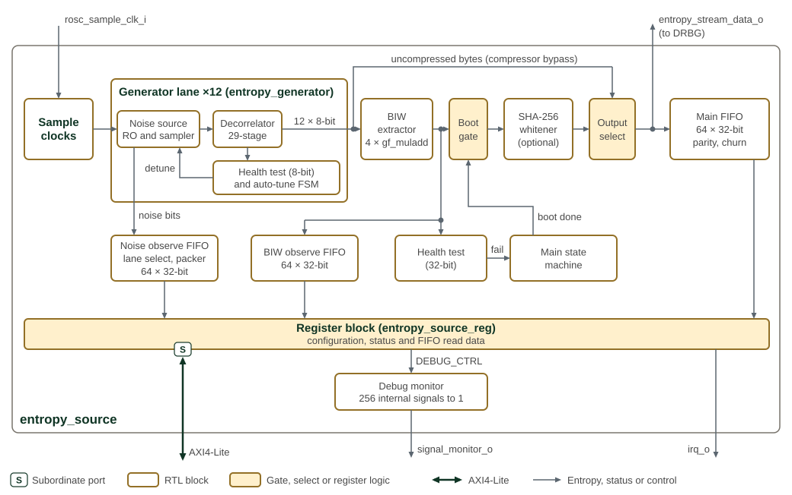
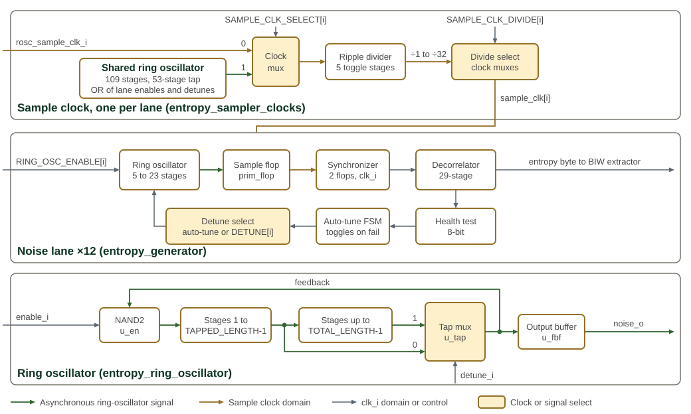
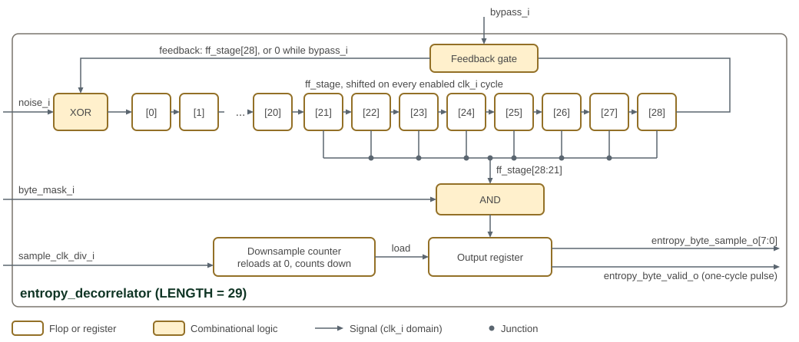

Entropy Source
The entropy source component is a random number generator which is based on multiple asynchronous ring oscillators sampled in such a way to generate random bits from the jitter noise and metastable latching behavior. It forms the basis of a True Random Number Generator (TRNG).
The generated stream is ``raw'' noise in the sense that there may still be some statistical biases present which need to be filtered out by an optional entropy conditioner post processing unit which would consume the output noise bits. NIST specifies a set of acceptable conditioners. Common conditioners are based on standard hash functions such as SHA256 and ASCON as well as standard keyed hash functions such as AES-CMAC and HMAC.
The source includes a configurable SHA-256 whitener. Software can bypass whitening to observe the unconditioned stream; health tests also monitor the individual noise generators and the combined stream.

Figure 1 shows the entropy source and its conditioning pipeline.
The client controls the component via the AXI4-Lite bus
interface which provides access to a set of memory mapped configuration
and status registers (CSRs) described later in this document. The noise
generators feed the decorrelation, mixing, health-test, and optional whitening
stages. Each word written into the main FIFO also leaves the block as
entropy_stream_data_o, qualified by entropy_stream_vld_o, towards the DRBG;
the FIFO itself is drained through the FIFO_RDATA register.
The main datapath in the figure runs left to right along the top row. The
generator lane stands for all twelve lanes, and Figure 2 shows its
noise source and sample clock in detail. The boot gate passes entropy only after
the main state machine has seen a passing boot health-test window; it qualifies
the whitener input, the uncompressed-byte path and the BIW observe FIFO, while
the 32-bit health test and the noise observe FIFO see the stream ungated. The
output select takes the whitener output, or, when
CTRL.BYPASS_ENTROPY_COMPRESSOR is set, the twelve uncompressed decorrelator
bytes as three 32-bit words, downsampled by CTRL.DOWNSAMPLE_RATE. The 32-bit
health test is clock-gated off in that mode. The register block configures every
stage; its connections to individual stages are not drawn. The debug monitor
routes one of 256 internal signals to signal_monitor_o.
The health-test modules are OpenTitan’s entropy_src repetition count, adaptive
proportion and Markov tests, and the main state machine is OpenTitan’s
entropy_src_main_sm. Their internal structure is described in the
OpenTitan entropy source
documentation.
The Programmer’s Guide gives the
programming guidance
for this block.
The entropy source is designed according to guidelines set forth in the NIST SP800-90B specification and is planned to be ready for FIPS 140-2 and 140-3 certification. It will also be compliant with AIS31 statistical requirements specified by the BSI agency.
1. Noise Generation
The entropy source uses 12 independent ring oscillators as its noise source. Each ring oscillator is constructed from the shared OCAH primitives (prim_clock_nand2, prim_buf, prim_stdmux2) to preserve the asynchronous feedback-loop structure through technology mapping. Each oscillator has two configurable lengths: a TOTAL_LENGTH and a TAPPED_LENGTH, where a multiplexer selects between the short and long feedback paths. The entropy_rosc_tune_fsm toggles between these two lengths on a rising edge of any health test failure, providing a rudimentary frequency detuning mechanism.
The oscillator output is sampled by a metastable D flip-flop (prim_flop) clocked by a sampling clock. The sampled bit is then synchronized to the system clock domain through a two-stage synchronizer. Each lane can be clocked either by an external sampling clock (rosc_sample_clk_i) or by a shared internal ring oscillator (total length 109, tapped length 53). A per-lane ripple divider provides division ratios of 1, 2, 4, 8, 16, and 32, selected through the CSR. Both selects are clock mux cells. Software changes a lane’s source or division only while that generator is disabled. A division value outside 0-5 selects divide-by-4.
Figure 2 shows the ring oscillators, sampling paths, and clock selection used to generate noise.

Figure 2 has three bands. The top band builds one sample clock
per lane: RING_OSC_CTRL.SAMPLE_CLK_SELECT bit i chooses rosc_sample_clk_i
(0) or the shared ring oscillator (1), and
GENERATOR_i_SAMPLE_CLK_CONFIG.SAMPLE_CLK_DIVIDE picks one ripple-divider tap.
The middle band is one of the twelve noise lanes; when CTRL.AUTOTUNE_ENABLE is
set the lane detune follows the auto-tune FSM, otherwise
RING_OSC_TUNE.DETUNE bit i. The bottom band is the ring oscillator used both
in each lane and, with 109 and 53 stages, as the shared sampling oscillator. Green
lines carry asynchronous oscillator signals, brown lines are in the sample-clock
domain and grey lines are in the clk_i domain or are controls.
Table 1 lists the lane ring lengths.
| Lane | 0 | 1 | 2 | 3 | 4 | 5 | 6 | 7 | 8 | 9 | 10 | 11 |
|---|---|---|---|---|---|---|---|---|---|---|---|---|
|
5 |
7 |
11 |
13 |
17 |
19 |
6 |
8 |
12 |
15 |
18 |
23 |
|
3 |
5 |
9 |
10 |
14 |
16 |
4 |
7 |
11 |
13 |
15 |
21 |
2. Decorrelation and BIW Mixing
Each sampled noise bit enters a serial decorrelator (entropy_decorrelator), which shifts bits through a 29-stage shift register with XOR feedback from the last stage, as Figure 3 shows. A downsample counter reloaded from DECORRELATOR_CTRL.SAMPLE_CLK_DIV latches the top 8 bits of the shift register as an entropy byte every SAMPLE_CLK_DIV + 1 clk_i cycles, 64 cycles at the reset value of 63, and pulses the byte-valid strobe for one cycle. The byte is ANDed with DECORRELATOR_MASK.ENTROPY_BYTE_MASK, so a cleared mask bit reads as zero; the mask and the divider are shared by all 12 lanes. Setting a lane’s bit in DECORRELATOR_CTRL.BYPASS forces the feedback to zero, so raw noise bits shift through the chain unmixed; the byte is still taken from the top 8 stages, downsampled and masked.

Figure 3 shows one lane’s decorrelator. The chain shifts on every clk_i cycle while enable_i is high, and the eight taps from ff_stage[21] to ff_stage[28] join into one byte-wide bundle. The output register loads when the counter reaches zero. While enable_i is low, the chain holds its contents and the counter reloads from sample_clk_div_i.
The 12 decorrelated byte streams are combined by the Barak-Impagliazzo-Wigderson (BIW) stage, which uses four gf_muladd instances performing y = a*b + c in GF(2^8) with the AES field polynomial (0x1B). The 12 input bytes are grouped into three sets of four and reduced to a single 32-bit word. This mixing step improves the statistical independence of the output without introducing significant latency.
3. Health Testing
Health tests operate at two levels. Each of the 12 entropy_generator instances runs an 8-bit entropy_health_test on its individual decorrelated output. At the top level, a second 32-bit entropy_health_test instance monitors the post-BIW (or post-bypass) stream.
The health test wrapper instantiates three OpenTitan-derived test modules. The repetition count test (entropy_src_repcnt_ht) tracks consecutive identical values per bit lane and flags when a threshold is exceeded. The adaptive proportion test (entropy_src_adaptp_ht) accumulates per-bit ones counts within a configurable window and compares the maximum and minimum lane counts against high and low thresholds. The Markov test (entropy_src_markov_ht) counts bit-pair transitions and compares to high and low thresholds at window boundaries. Window synchronization is driven by a prim_count counter in the entropy_generator_complex.
Health test thresholds, enable bits, and window sizes are all programmable through the CSR interface. Test status is reported as an 8-bit vector where bit 0 indicates a repetition count failure, bit 3 an adaptive proportion failure, and bits 4-5 Markov high/low failures.
4. Health Test Watermark
HT_WATERMARK is one shared register whose source and maximum/minimum direction are selected by HT_WATERMARK_NUM; there is no independent storage per selector. A selector write changes which counter updates the shared register but does not clear it, so changing only the selector carries the value recorded by the previous mode.
The shared watermark is armed by a CTRL.MODULE_ENABLE 0-to-1 transition. High modes (REPCNT_HI, APT_HI, and MARKOV_HI) arm to 0x0000; low modes (APT_LO and MARKOV_LO) arm to 0xFFFF. A hardware reset restores the selector and watermark together, so a deterministic baseline requires HT_WATERMARK_NUM to be written before the MODULE_ENABLE toggle. With the reset-default MODULE_ENABLE=1, the power-on enable pulse performs the first mode-aware arm automatically.
5. Persistent Failure and AlertHang
The health-test subsystem includes a persistent-failure path that halts entropy output when failures persist beyond a programmed threshold. A saturating counter (ALERT_SUMMARY_FAIL_COUNTS.ANY_FAIL_COUNT) records one count per health-test window in which any test failed; a mid-window failure of the continuous repetition-count test is captured and counted once for that window. When the counter reaches ALERT_THRESHOLD.THRESHOLD (default 4, i.e. four failing windows, locked by FIPS_LOCK), alert_thresh_fail is asserted and the main FSM transitions through AlertState into AlertHang, halting entropy output. AlertHang persists until the FSM is reset by rst_ni or software clears CTRL.MODULE_ENABLE. The event sets MAIN_SM_STATUS.ALERT and raises INTR_STATUS.PERSISTENT_FAILURE. The sticky MAIN_SM_STATUS.ALERT and MAIN_SM_STATUS.ERR status bits are cleared by writing 1 (W1C) or by the full entropy-source reset.
Setting ALERT_THRESHOLD.THRESHOLD to zero disables the comparator, leaving the counter accumulating without ever asserting alert_thresh_fail.
6. SHA-256 Whitening
When the SHA-256 whitener is enabled via the CSR, the 32-bit BIW output stream feeds into the entropy_sha256_whitener module. This module accumulates 16 consecutive 32-bit words (one SHA-256 block of 512 bits), computes the SHA-256 digest using the OpenTitan prim_sha2_32 primitive, and emits the 8-word (256-bit) digest. The compression ratio is 2:1 (16 input words produce 8 output words). When the whitener is disabled, the BIW output passes through to the FIFO without modification.
7. Output FIFO
The conditioned entropy stream is stored in a 64-entry FIFO (entropy_fifo). Each entry is 36 bits wide: 32 data bits plus 4 byte-wise odd parity bits. The FIFO includes pointer integrity checking (normal and inverted pointer pairs with mismatch detection) and parity verification on reads. An optional churn mode XORs the incoming data with a word read from the diametrically opposite FIFO position, improving entropy distribution. Overflow, underflow, parity error, and pointer error conditions are all reported to the CSR block and can trigger interrupts.
The entropy_stream_data_o and entropy_stream_vld_o top-level ports carry each word as it is written into the FIFO, not the FIFO read data, and there is no backpressure. In SEP they connect to the DRBG seed path, which distributes the generated random data to the entropy consumers.
Because the FIFO holds the same words that seed the DRBG, FIFO_CTRL.ENABLE is covered by FIPS_LOCK. The field gates only the FIFO write, so the DRBG seed stream continues whatever its value. It resets to one, keeping the FIFO_RDATA read path live out of reset; the TRNG bring-up sequence in the Programmer’s Guide closes it before FIPS_LOCK. Reads remain available while writes are disabled, so words already in the FIFO stay readable until they are drained.
8. Reset
The entropy source rst_ni input resets its register block, health-test/FSM
state, conditioning pipeline, counters, and FIFOs. Reserved CTRL[0] reads as
zero and ignores writes.
At SEP integration level, SEP_RESET_CTRL.SW_RESET_N.TRNG_SW_RST_N requests a
shared reset of the entropy source and DRBG. Hardware first drains and isolates
the ESRC, CSRNG, and EDN AXI ports, then asserts the common reset. This is a
full-IP reset: all entropy-source CSRs and FIPS_LOCK return to reset values.
Post-mux EDN adapters and the fabric entropy pool remain in the POR reset domain;
they synchronously clear buffered entropy while the internal reset is active.
After reset release, MODULE_ENABLE returning to one produces the normal
enable pulse and restarts startup health testing before entropy is released.
9. Debug Observation Pin
DEBUG_CTRL.SELECT_SIGNAL routes one of 256 internal signals to the
signal_monitor_o output, and DEBUG_CTRL.SELECT_FREQ_DIV divides it down for
external observation. Some selections expose entropy ahead of conditioning: the
raw per-generator noise bits, the compressed 32-bit entropy stream, and the
uncompressed per-generator entropy bytes.
Both fields are covered by FIPS_LOCK: once FIPS_LOCK.LOCK is set, software can
no longer retarget the pin or change its divider, so a locked, certified part
cannot route pre-conditioning entropy to the observation pin. The raw and BIW
observe-FIFO capture enables (NOISE_OBS_CTRL.RAW_ENABLE,
BIW_OBS_CTRL.RAW_ENABLE) are held under the lock the same way. SP 800-90B treats
this pre-conditioning observation as a validation-time interface that may be
disabled in the field, which the lock enforces. As defense in depth, SEP also
leaves signal_monitor_o unconnected and false-paths the port in synthesis; an
integration that routes the pin off-chip still owns restricting access to the
lifecycle or debug states in which observing pre-conditioning entropy is
acceptable.
10. Memory Map and Register Reference
10.1. Memory Map
Register offsets are relative to the block base in the subsystem memory map. The detailed map below defines each register and its fields.
10.2. Detailed Register Map
Entropy Source Address Map
Entropy-source configuration, status, and data registers.
Register List:
| Address | Name | Access | Description |
|---|---|---|---|
| 0x0 | COMPONENT_ID | R | Identifies the entropy-source register interface. |
| 0x4 | CTRL | RW | Controls entropy generation and conditioning. |
| 0xC | DEBUG_CTRL | RW | Controls the external debug observation pin. FIPS_LOCK.LOCK prevents software changes to the signal selection and divider. |
| 0x10 | INTR_STATUS | RW | Reports latched interrupt status; write one to clear a bit. |
| 0x14 | INTR_ENABLE | RW | Enables individual interrupt sources. |
| 0x18 | INTR_TEST | W | Triggers individual interrupt sources for testing. |
| 0x1C | SHA256_STATUS | R | Reports SHA-256 conditioner progress. |
| 0x20 | FIFO_CTRL | RW | Controls the 64-entry main entropy FIFO. |
| 0x24 | FIFO_STATUS | R | Reports main FIFO occupancy and pointers. |
| 0x28 | FIFO_RDATA | R | Provides the next main FIFO word. |
| 0x30 | HEALTH_TEST_CTRL | RW | Controls continuous entropy health tests. |
| 0x34 | HEALTH_TEST_WINDOW_SIZE | RW | Sets the APT and Markov window length. |
| 0x38 | MARKOV_TEST_PROB_THRESHOLDS | RW | Sets high and low Markov alternation-count thresholds. |
| 0x40 | HEALTH_TEST_STATUS | RW | Latches 32-bit stream health-test failures: repetition [0], APT high or low [3], Markov high [4], and Markov low [5]. Write one to clear. |
| 0x44 | REPETITION_TEST_COUNT | R | Reports the highest current repetition count. |
| 0x50 | APT_PATTERN_COUNT_1BIT | R | Reports the highest per-lane APT one-count in the current window. |
| 0x54 | APT_PATTERN_COUNT_2BIT | R | Reports the lowest per-lane APT one-count in the current window. |
| 0x60 | APT_PROPORTION_1BIT | RW | Sets the APT high one-count threshold. |
| 0x70 | APT_PROPORTION_LO | RW | Sets the APT low one-count threshold. |
| 0x80 | MARKOV_TEST_COUNTS_0 | R | Reports the highest and lowest per-lane alternation counts in the current Markov window. |
| 0x90 | RING_OSC_ENABLE | RW | Controls noise and sample-clock ring oscillators. |
| 0x94 | RING_OSC_TUNE | RW | Selects detuned ring-oscillator tap points. |
| 0x98 | RING_OSC_CTRL | RW | Selects each generator sample-clock source. |
| 0xA0 | DECORRELATOR_CTRL | RW | Controls generator decorrelation and byte cadence. |
| 0xA4 | DECORRELATOR_MASK | RW | Masks bits in every generator entropy byte. |
| 0xB4 | MAIN_SM_STATUS | RW | Reports the startup health-test gate state machine. |
| 0xC0 | GENERATOR_0_HEALTH_STATUS | RW | Latches generator 0 health-test failures; write one to clear. |
| 0xC4 | GENERATOR_1_HEALTH_STATUS | RW | Latches generator 1 health-test failures; write one to clear. |
| 0xC8 | GENERATOR_2_HEALTH_STATUS | RW | Latches generator 2 health-test failures; write one to clear. |
| 0xCC | GENERATOR_3_HEALTH_STATUS | RW | Latches generator 3 health-test failures; write one to clear. |
| 0xD0 | GENERATOR_4_HEALTH_STATUS | RW | Latches generator 4 health-test failures; write one to clear. |
| 0xD4 | GENERATOR_5_HEALTH_STATUS | RW | Latches generator 5 health-test failures; write one to clear. |
| 0xD8 | GENERATOR_6_HEALTH_STATUS | RW | Latches generator 6 health-test failures; write one to clear. |
| 0xDC | GENERATOR_7_HEALTH_STATUS | RW | Latches generator 7 health-test failures; write one to clear. |
| 0xE0 | GENERATOR_8_HEALTH_STATUS | RW | Latches generator 8 health-test failures; write one to clear. |
| 0xE4 | GENERATOR_9_HEALTH_STATUS | RW | Latches generator 9 health-test failures; write one to clear. |
| 0xE8 | GENERATOR_10_HEALTH_STATUS | RW | Latches generator 10 health-test failures; write one to clear. |
| 0xEC | GENERATOR_11_HEALTH_STATUS | RW | Latches generator 11 health-test failures; write one to clear. |
| 0x100 | GENERATOR_0_SAMPLE_CLK_CONFIG | RW | Controls generator 0 sample-clock division. |
| 0x104 | GENERATOR_1_SAMPLE_CLK_CONFIG | RW | Controls generator 1 sample-clock division. |
| 0x108 | GENERATOR_2_SAMPLE_CLK_CONFIG | RW | Controls generator 2 sample-clock division. |
| 0x10C | GENERATOR_3_SAMPLE_CLK_CONFIG | RW | Controls generator 3 sample-clock division. |
| 0x110 | GENERATOR_4_SAMPLE_CLK_CONFIG | RW | Controls generator 4 sample-clock division. |
| 0x114 | GENERATOR_5_SAMPLE_CLK_CONFIG | RW | Controls generator 5 sample-clock division. |
| 0x118 | GENERATOR_6_SAMPLE_CLK_CONFIG | RW | Controls generator 6 sample-clock division. |
| 0x11C | GENERATOR_7_SAMPLE_CLK_CONFIG | RW | Controls generator 7 sample-clock division. |
| 0x120 | GENERATOR_8_SAMPLE_CLK_CONFIG | RW | Controls generator 8 sample-clock division. |
| 0x124 | GENERATOR_9_SAMPLE_CLK_CONFIG | RW | Controls generator 9 sample-clock division. |
| 0x128 | GENERATOR_10_SAMPLE_CLK_CONFIG | RW | Controls generator 10 sample-clock division. |
| 0x12C | GENERATOR_11_SAMPLE_CLK_CONFIG | RW | Controls generator 11 sample-clock division. |
| 0x130 | HT_WATERMARK_NUM | RW | Selects the counter and direction for the shared health-test watermark. Changing the selection preserves the current watermark. |
| 0x134 | HT_WATERMARK | R | Reports one selector-dependent watermark. A CTRL.MODULE_ENABLE rising edge arms high modes to zero and low modes to 0xFFFF. |
| 0x138 | REPCNT_TOTAL_FAILS | R | Counts repetition-test failures since the last CTRL.MODULE_ENABLE rising edge. |
| 0x13C | APT_HI_TOTAL_FAILS | R | Counts APT high-threshold failures since the last CTRL.MODULE_ENABLE rising edge. |
| 0x140 | APT_LO_TOTAL_FAILS | R | Counts APT low-threshold failures since the last CTRL.MODULE_ENABLE rising edge. |
| 0x144 | MARKOV_HI_TOTAL_FAILS | R | Counts Markov high-threshold failures since the last CTRL.MODULE_ENABLE rising edge. |
| 0x148 | MARKOV_LO_TOTAL_FAILS | R | Counts Markov low-threshold failures since the last CTRL.MODULE_ENABLE rising edge. |
| 0x14C | ALERT_SUMMARY_FAIL_COUNTS | R | Counts consecutive health-test windows containing any failure and clears after an accepted passing window. |
| 0x150 | ALERT_FAIL_COUNTS | R | Reports saturating per-test failure counts for the current alert sequence. |
| 0x154 | FIPS_LOCK | RW | Locks entropy generation, conditioning, and health-test configuration against software writes until hardware reset. |
| 0x158 | ALERT_THRESHOLD | RW | Sets the failing-window count that enters the persistent-failure alert path. |
| 0x15C | MIN_ENTROPY_H | RW | Stores assessed per-sample min-entropy in unsigned Q4.4 format for advisory threshold calculation. |
| 0x160 | RECOMMENDED_THRESHOLDS | R | Reports advisory repetition and APT thresholds derived from MIN_ENTROPY_H. |
| 0x164 | BIW_OBS_CTRL | RW | Controls copy-only capture of the post-BIW, pre-SHA stream. |
| 0x168 | BIW_OBS_STATUS | R | Reports BIW observe FIFO occupancy and pointers. |
| 0x16C | BIW_OBS_RDATA | R | Provides the next post-BIW, pre-SHA observe word. |
| 0x170 | NOISE_OBS_CTRL | RW | Controls copy-only capture of one pre-decorrelator generator lane. |
| 0x174 | NOISE_OBS_STATUS | R | Reports raw-noise observe FIFO occupancy and pointers. |
| 0x178 | NOISE_OBS_RDATA | R | Provides the next packed raw-noise observe word. |
Register Details:
COMPONENT_ID
| Bits | Field | Access | Reset | Description |
|---|---|---|---|---|
| 31:28 | MAJOR_VERSION | R | 0x0 | Major interface version. |
| 27:24 | MINOR_VERSION | R | 0x1 | Minor interface version. |
| 23:16 | Reserved | - | - | Reserved |
| 15:0 | NAME | R | 0x1 | Entropy-source component identifier. |
CTRL
| Bits | Field | Access | Reset | Description |
|---|---|---|---|---|
| 31:29 | Reserved | - | - | Reserved |
| 28 | SHA256_WHITENING_ENABLE | RW | 0x1 | Enables SHA-256 conditioning of each 512-bit BIW input block into a 256-bit digest. When clear, BIW words pass directly to the FIFO. FIPS_LOCK.LOCK prevents software changes. |
| 27:26 | Reserved | - | - | Reserved |
| 25:16 | DOWNSAMPLE_RATE | RW | 0x0 | Selects every (N+1)th decorrelator output while BIW extraction is bypassed. FIPS_LOCK.LOCK prevents software changes. |
| 15:9 | Reserved | - | - | Reserved |
| 8 | BYPASS_ENTROPY_COMPRESSOR | RW | 0x0 | Bypasses BIW extraction and writes the twelve generator bytes to the FIFO as three 32-bit words. FIPS_LOCK.LOCK prevents software changes. |
| 7:5 | Reserved | - | - | Reserved |
| 4 | AUTOTUNE_ENABLE | RW | 0x0 | Enables per-generator automatic detuning after a lane health-test failure. FIPS_LOCK.LOCK prevents software changes. |
| 3:2 | Reserved | - | - | Reserved |
| 1 | MODULE_ENABLE | RW | 0x1 | Enables startup health testing and entropy output. Clearing this field holds the main state machine idle. FIPS_LOCK.LOCK prevents software changes. |
| 0 | RSVD0 | R | 0x0 | Reserved; reads zero and ignores writes. |
DEBUG_CTRL
| Bits | Field | Access | Reset | Description |
|---|---|---|---|---|
| 31:11 | Reserved | - | - | Reserved |
| 10:8 | SELECT_FREQ_DIV | RW | 0x0 | Selects observation division by 1, 2, 4, 8, 16, 32, 64, or 128. FIPS_LOCK.LOCK prevents software changes. |
| 7:0 | SELECT_SIGNAL | RW | 0x0 | Selects the observed signal: generator noise bits [11:0], sample clocks [27:16], BIW data [63:32], FIFO input [95:64], or generator bytes [223:128]. Other selections drive the divider input low. FIPS_LOCK.LOCK prevents software changes. |
INTR_STATUS
| Bits | Field | Access | Reset | Description |
|---|---|---|---|---|
| 31:29 | Reserved | - | - | Reserved |
| 28 | NOISE_OBS_OVERFLOW | RW1C | 0x0 | Indicates that a raw-noise observe FIFO word was discarded while full. Write one to clear. |
| 27:25 | Reserved | - | - | Reserved |
| 24 | BIW_OBS_OVERFLOW | RW1C | 0x0 | Indicates that a BIW observe FIFO word was discarded while full. Write one to clear. |
| 23:21 | Reserved | - | - | Reserved |
| 20 | AUTOTUNE_FAIL | RW1C | 0x0 | Indicates a per-generator health-test failure while automatic detuning is enabled. Write one to clear. |
| 19:17 | Reserved | - | - | Reserved |
| 16 | PERSISTENT_FAILURE | RW1C | 0x0 | Indicates a persistent health-test failure or health-test counter error. Write one to clear. |
| 15:13 | Reserved | - | - | Reserved |
| 12 | FIFO_UNDERFLOW | RW1C | 0x0 | Indicates that software read the empty main FIFO. Write one to clear. |
| 11:9 | Reserved | - | - | Reserved |
| 8 | FIFO_OVERFLOW | RW1C | 0x0 | Indicates that a main FIFO write was discarded while full. Write one to clear. |
| 7:5 | Reserved | - | - | Reserved |
| 4 | FIFO_ERROR | RW1C | 0x0 | Indicates a FIFO integrity error. Write one to clear. |
| 3:1 | Reserved | - | - | Reserved |
| 0 | HEALTH_TEST_FAILED | RW1C | 0x0 | Indicates a failure in the 32-bit entropy-stream health tests. Write one to clear. |
INTR_ENABLE
| Bits | Field | Access | Reset | Description |
|---|---|---|---|---|
| 31:29 | Reserved | - | - | Reserved |
| 28 | NOISE_OBS_OVERFLOW | RW | 0x0 | Enables the raw-noise observe FIFO overflow interrupt. |
| 27:25 | Reserved | - | - | Reserved |
| 24 | BIW_OBS_OVERFLOW | RW | 0x0 | Enables the BIW observe FIFO overflow interrupt. |
| 23:21 | Reserved | - | - | Reserved |
| 20 | AUTOTUNE_FAIL | RW | 0x0 | Enables the automatic-detuning failure interrupt. |
| 19:17 | Reserved | - | - | Reserved |
| 16 | PERSISTENT_FAILURE | RW | 0x0 | Enables the persistent-failure interrupt. |
| 15:13 | Reserved | - | - | Reserved |
| 12 | FIFO_UNDERFLOW | RW | 0x0 | Enables the main FIFO underflow interrupt. |
| 11:9 | Reserved | - | - | Reserved |
| 8 | FIFO_OVERFLOW | RW | 0x0 | Enables the main FIFO overflow interrupt. |
| 7:5 | Reserved | - | - | Reserved |
| 4 | FIFO_ERROR | RW | 0x0 | Enables the FIFO integrity-error interrupt. |
| 3:1 | Reserved | - | - | Reserved |
| 0 | HEALTH_TEST_FAILED | RW | 0x0 | Enables the health-test failure interrupt. |
INTR_TEST
| Bits | Field | Access | Reset | Description |
|---|---|---|---|---|
| 31:29 | Reserved | - | - | Reserved |
| 28 | NOISE_OBS_OVERFLOW | W 1P | 0x0 | Write one to pulse the raw-noise observe FIFO overflow interrupt source. |
| 27:25 | Reserved | - | - | Reserved |
| 24 | BIW_OBS_OVERFLOW | W 1P | 0x0 | Write one to pulse the BIW observe FIFO overflow interrupt source. |
| 23:21 | Reserved | - | - | Reserved |
| 20 | AUTOTUNE_FAIL | W 1P | 0x0 | Write one to pulse the automatic-detuning failure interrupt source. |
| 19:17 | Reserved | - | - | Reserved |
| 16 | PERSISTENT_FAILURE | W 1P | 0x0 | Write one to pulse the persistent-failure interrupt source. |
| 15:13 | Reserved | - | - | Reserved |
| 12 | FIFO_UNDERFLOW | W 1P | 0x0 | Write one to pulse the main FIFO underflow interrupt source. |
| 11:9 | Reserved | - | - | Reserved |
| 8 | FIFO_OVERFLOW | W 1P | 0x0 | Write one to pulse the main FIFO overflow interrupt source. |
| 7:5 | Reserved | - | - | Reserved |
| 4 | FIFO_ERROR | W 1P | 0x0 | Write one to pulse the FIFO integrity-error interrupt source. |
| 3:1 | Reserved | - | - | Reserved |
| 0 | HEALTH_TEST_FAILED | W 1P | 0x0 | Write one to pulse the health-test failure interrupt source. |
SHA256_STATUS
| Bits | Field | Access | Reset | Description |
|---|---|---|---|---|
| 31:12 | Reserved | - | - | Reserved |
| 11:8 | OUTPUT_COUNT | R | 0x0 | Number of 32-bit digest words remaining for output. Reports 8 when a digest becomes available, decrements through 0 as words are accepted, and remains 0 while idle or bypassed. |
| 7:4 | INPUT_COUNT | R | 0x0 | Number of 32-bit words currently accumulated in the 512-bit input block. |
| 3:1 | Reserved | - | - | Reserved |
| 0 | BUSY | R | 0x0 | Indicates that SHA-256 processing or digest output is active. |
FIFO_CTRL
| Bits | Field | Access | Reset | Description |
|---|---|---|---|---|
| 31:5 | Reserved | - | - | Reserved |
| 4 | ENTROPY_CHURN_ENABLE | RW | 0x0 | XORs each incoming word with the FIFO entry 32 positions ahead of the write pointer. FIPS_LOCK.LOCK prevents software changes. |
| 3:1 | Reserved | - | - | Reserved |
| 0 | ENABLE | RW | 0x1 | Enables FIFO writes. Reads remain available while writes are disabled. Words offered to the FIFO are also the DRBG seed stream, which this field does not gate. FIPS_LOCK.LOCK prevents software changes. |
FIFO_STATUS
| Bits | Field | Access | Reset | Description |
|---|---|---|---|---|
| 31:22 | Reserved | - | - | Reserved |
| 21:16 | RPTR | R | 0x0 | Current FIFO read pointer. |
| 15:14 | Reserved | - | - | Reserved |
| 13:8 | WPTR | R | 0x0 | Current FIFO write pointer. |
| 7 | Reserved | - | - | Reserved |
| 6:0 | LEVEL | R | 0x0 | Number of valid 32-bit words in the FIFO. |
FIFO_RDATA
| Bits | Field | Access | Reset | Description |
|---|---|---|---|---|
| 31:0 | RDATA | R RMOD | 0x0 | Returns and removes the next FIFO word. Reading an empty FIFO sets INTR_STATUS.FIFO_UNDERFLOW and returns undefined data. |
HEALTH_TEST_CTRL
| Bits | Field | Access | Reset | Description |
|---|---|---|---|---|
| 31:16 | Reserved | - | - | Reserved |
| 15:8 | REPETITION_LIMIT | RW | 0x19 | Maximum allowed per-lane repetition count before the test fails. FIPS_LOCK.LOCK prevents software changes. |
| 7:3 | Reserved | - | - | Reserved |
| 2:0 | ENABLE | RW | 0x7 | Enables the repetition-count, adaptive-proportion, and Markov tests in bits 0, 1, and 2. Disabling a test clears its state. |
HEALTH_TEST_WINDOW_SIZE
| Bits | Field | Access | Reset | Description |
|---|---|---|---|---|
| 31:16 | Reserved | - | - | Reserved |
| 15:0 | SIZE | RW | 0x800 | Number of valid entropy words per APT and Markov window. FIPS_LOCK.LOCK requires a value of at least 1024 and prevents software changes. |
MARKOV_TEST_PROB_THRESHOLDS
| Bits | Field | Access | Reset | Description |
|---|---|---|---|---|
| 31:16 | PROB_10_THRESHOLD | RW | 0x64 | Minimum allowed per-lane alternation count at the window boundary. FIPS_LOCK.LOCK prevents software changes. |
| 15:0 | PROB_01_THRESHOLD | RW | 0x4B0 | Maximum allowed per-lane alternation count at the window boundary. FIPS_LOCK.LOCK prevents software changes. |
HEALTH_TEST_STATUS
| Bits | Field | Access | Reset | Description |
|---|---|---|---|---|
| 31:8 | Reserved | - | - | Reserved |
| 7:0 | HEALTH_STATUS | RW1C | 0x0 | Latched health-test failure bits; write one to clear. |
REPETITION_TEST_COUNT
| Bits | Field | Access | Reset | Description |
|---|---|---|---|---|
| 31:16 | Reserved | - | - | Reserved |
| 15:0 | REPETITION_COUNT | R | 0x0 | Highest current repetition count among the 32 entropy lanes. |
APT_PATTERN_COUNT_1BIT
| Bits | Field | Access | Reset | Description |
|---|---|---|---|---|
| 31:16 | Reserved | - | - | Reserved |
| 15:0 | PATTERN_COUNT | R | 0x0 | Highest current one-count among the 32 entropy lanes. |
APT_PATTERN_COUNT_2BIT
| Bits | Field | Access | Reset | Description |
|---|---|---|---|---|
| 31:16 | Reserved | - | - | Reserved |
| 15:0 | PATTERN_COUNT | R | 0x0 | Lowest current one-count among the 32 entropy lanes. |
APT_PROPORTION_1BIT
| Bits | Field | Access | Reset | Description |
|---|---|---|---|---|
| 31:16 | Reserved | - | - | Reserved |
| 15:0 | LIMIT | RW | 0x4B0 | Maximum allowed per-lane one-count at the window boundary. FIPS_LOCK.LOCK prevents software changes. |
APT_PROPORTION_LO
| Bits | Field | Access | Reset | Description |
|---|---|---|---|---|
| 31:16 | Reserved | - | - | Reserved |
| 15:0 | LIMIT | RW | 0x350 | Minimum allowed per-lane one-count at the window boundary. Zero disables the low-side test. FIPS_LOCK.LOCK prevents software changes. |
MARKOV_TEST_COUNTS_0
| Bits | Field | Access | Reset | Description |
|---|---|---|---|---|
| 31:16 | COUNT_10 | R | 0x0 | Lowest current per-lane alternation count. |
| 15:0 | COUNT_01 | R | 0x0 | Highest current per-lane alternation count. |
RING_OSC_ENABLE
| Bits | Field | Access | Reset | Description |
|---|---|---|---|---|
| 31:24 | Reserved | - | - | Reserved |
| 23:12 | SAMPLE_CLK_ENABLE | RW | 0xFFF | Enables the shared sample-clock ring oscillator when any bit is set. FIPS_LOCK.LOCK prevents software changes. |
| 11:0 | ENABLE | RW | 0xFFF | Enables each generator noise ring oscillator. FIPS_LOCK.LOCK prevents software changes. |
RING_OSC_TUNE
| Bits | Field | Access | Reset | Description |
|---|---|---|---|---|
| 31:24 | Reserved | - | - | Reserved |
| 23:12 | SAMPLE_CLK_DETUNE | RW | 0x0 | Selects the full-length (longer) shared sample-clock oscillator tap, lowering its frequency, when any bit is set. FIPS_LOCK.LOCK prevents software changes. |
| 11:0 | DETUNE | RW | 0x0 | Selects the full-length (longer) tap for each noise ring oscillator, lowering its frequency, while automatic tuning is disabled; the reset value (clear) selects the shorter tap. FIPS_LOCK.LOCK prevents software changes. |
RING_OSC_CTRL
| Bits | Field | Access | Reset | Description |
|---|---|---|---|---|
| 31:12 | Reserved | - | - | Reserved |
| 11:0 | SAMPLE_CLK_SELECT | RW | 0xFFF | Selects the shared internal sample clock when set and the external sample clock when clear. FIPS_LOCK.LOCK prevents software changes. |
DECORRELATOR_CTRL
| Bits | Field | Access | Reset | Description |
|---|---|---|---|---|
| 31:12 | SAMPLE_CLK_DIV | RW | 0x3F | Sets the generator byte-output period to this value plus one sample-clock cycles. FIPS_LOCK.LOCK prevents software changes. |
| 11:0 | BYPASS | RW | 0x0 | Bypasses the LFSR feedback path independently for each generator. FIPS_LOCK.LOCK prevents software changes. |
DECORRELATOR_MASK
| Bits | Field | Access | Reset | Description |
|---|---|---|---|---|
| 31:8 | Reserved | - | - | Reserved |
| 7:0 | ENTROPY_BYTE_MASK | RW | 0xFF | Enables corresponding entropy-byte bits when set. FIPS_LOCK.LOCK prevents software changes. |
MAIN_SM_STATUS
| Bits | Field | Access | Reset | Description |
|---|---|---|---|---|
| 31:14 | Reserved | - | - | Reserved |
| 13 | ALERT_CNTR_CLR_OK | R | 0x0 | Indicates that a passing window may clear alert failure counters. |
| 12 | BOOT_PHASE_DONE | R | 0x0 | Indicates successful completion of startup health testing and permits entropy output. |
| 11 | ERR | RW1C | 0x0 | Latches an illegal state or health-test counter integrity error. Write one or reset the block to clear. |
| 10 | ALERT | RW1C | 0x0 | Latches entry into the persistent-failure alert path, which halts entropy output. Write one or reset the block to clear. |
| 9 | IDLE | R | 0x0 | Indicates that the state machine is idle. |
| 8:0 | STATE | R | 0x0 | Current sparse-encoded state-machine state. |
GENERATOR_0_HEALTH_STATUS
| Bits | Field | Access | Reset | Description |
|---|---|---|---|---|
| 31:8 | Reserved | - | - | Reserved |
| 7:0 | STATUS | RW1C | 0x0 | Generator 0 failure bits use the HEALTH_TEST_STATUS allocation. |
GENERATOR_1_HEALTH_STATUS
| Bits | Field | Access | Reset | Description |
|---|---|---|---|---|
| 31:8 | Reserved | - | - | Reserved |
| 7:0 | STATUS | RW1C | 0x0 | Generator 1 failure bits use the HEALTH_TEST_STATUS allocation. |
GENERATOR_2_HEALTH_STATUS
| Bits | Field | Access | Reset | Description |
|---|---|---|---|---|
| 31:8 | Reserved | - | - | Reserved |
| 7:0 | STATUS | RW1C | 0x0 | Generator 2 failure bits use the HEALTH_TEST_STATUS allocation. |
GENERATOR_3_HEALTH_STATUS
| Bits | Field | Access | Reset | Description |
|---|---|---|---|---|
| 31:8 | Reserved | - | - | Reserved |
| 7:0 | STATUS | RW1C | 0x0 | Generator 3 failure bits use the HEALTH_TEST_STATUS allocation. |
GENERATOR_4_HEALTH_STATUS
| Bits | Field | Access | Reset | Description |
|---|---|---|---|---|
| 31:8 | Reserved | - | - | Reserved |
| 7:0 | STATUS | RW1C | 0x0 | Generator 4 failure bits use the HEALTH_TEST_STATUS allocation. |
GENERATOR_5_HEALTH_STATUS
| Bits | Field | Access | Reset | Description |
|---|---|---|---|---|
| 31:8 | Reserved | - | - | Reserved |
| 7:0 | STATUS | RW1C | 0x0 | Generator 5 failure bits use the HEALTH_TEST_STATUS allocation. |
GENERATOR_6_HEALTH_STATUS
| Bits | Field | Access | Reset | Description |
|---|---|---|---|---|
| 31:8 | Reserved | - | - | Reserved |
| 7:0 | STATUS | RW1C | 0x0 | Generator 6 failure bits use the HEALTH_TEST_STATUS allocation. |
GENERATOR_7_HEALTH_STATUS
| Bits | Field | Access | Reset | Description |
|---|---|---|---|---|
| 31:8 | Reserved | - | - | Reserved |
| 7:0 | STATUS | RW1C | 0x0 | Generator 7 failure bits use the HEALTH_TEST_STATUS allocation. |
GENERATOR_8_HEALTH_STATUS
| Bits | Field | Access | Reset | Description |
|---|---|---|---|---|
| 31:8 | Reserved | - | - | Reserved |
| 7:0 | STATUS | RW1C | 0x0 | Generator 8 failure bits use the HEALTH_TEST_STATUS allocation. |
GENERATOR_9_HEALTH_STATUS
| Bits | Field | Access | Reset | Description |
|---|---|---|---|---|
| 31:8 | Reserved | - | - | Reserved |
| 7:0 | STATUS | RW1C | 0x0 | Generator 9 failure bits use the HEALTH_TEST_STATUS allocation. |
GENERATOR_10_HEALTH_STATUS
| Bits | Field | Access | Reset | Description |
|---|---|---|---|---|
| 31:8 | Reserved | - | - | Reserved |
| 7:0 | STATUS | RW1C | 0x0 | Generator 10 failure bits use the HEALTH_TEST_STATUS allocation. |
GENERATOR_11_HEALTH_STATUS
| Bits | Field | Access | Reset | Description |
|---|---|---|---|---|
| 31:8 | Reserved | - | - | Reserved |
| 7:0 | STATUS | RW1C | 0x0 | Generator 11 failure bits use the HEALTH_TEST_STATUS allocation. |
GENERATOR_0_SAMPLE_CLK_CONFIG
| Bits | Field | Access | Reset | Description |
|---|---|---|---|---|
| 31:5 | Reserved | - | - | Reserved |
| 4:0 | SAMPLE_CLK_DIVIDE | RW | 0x0 | Selects division by 1, 2, 4, 8, 16, or 32. FIPS_LOCK.LOCK prevents software changes. |
GENERATOR_1_SAMPLE_CLK_CONFIG
| Bits | Field | Access | Reset | Description |
|---|---|---|---|---|
| 31:5 | Reserved | - | - | Reserved |
| 4:0 | SAMPLE_CLK_DIVIDE | RW | 0x0 | Selects division by 1, 2, 4, 8, 16, or 32. FIPS_LOCK.LOCK prevents software changes. |
GENERATOR_2_SAMPLE_CLK_CONFIG
| Bits | Field | Access | Reset | Description |
|---|---|---|---|---|
| 31:5 | Reserved | - | - | Reserved |
| 4:0 | SAMPLE_CLK_DIVIDE | RW | 0x1 | Selects division by 1, 2, 4, 8, 16, or 32. FIPS_LOCK.LOCK prevents software changes. |
GENERATOR_3_SAMPLE_CLK_CONFIG
| Bits | Field | Access | Reset | Description |
|---|---|---|---|---|
| 31:5 | Reserved | - | - | Reserved |
| 4:0 | SAMPLE_CLK_DIVIDE | RW | 0x1 | Selects division by 1, 2, 4, 8, 16, or 32. FIPS_LOCK.LOCK prevents software changes. |
GENERATOR_4_SAMPLE_CLK_CONFIG
| Bits | Field | Access | Reset | Description |
|---|---|---|---|---|
| 31:5 | Reserved | - | - | Reserved |
| 4:0 | SAMPLE_CLK_DIVIDE | RW | 0x2 | Selects division by 1, 2, 4, 8, 16, or 32. FIPS_LOCK.LOCK prevents software changes. |
GENERATOR_5_SAMPLE_CLK_CONFIG
| Bits | Field | Access | Reset | Description |
|---|---|---|---|---|
| 31:5 | Reserved | - | - | Reserved |
| 4:0 | SAMPLE_CLK_DIVIDE | RW | 0x2 | Selects division by 1, 2, 4, 8, 16, or 32. FIPS_LOCK.LOCK prevents software changes. |
GENERATOR_6_SAMPLE_CLK_CONFIG
| Bits | Field | Access | Reset | Description |
|---|---|---|---|---|
| 31:5 | Reserved | - | - | Reserved |
| 4:0 | SAMPLE_CLK_DIVIDE | RW | 0x0 | Selects division by 1, 2, 4, 8, 16, or 32. FIPS_LOCK.LOCK prevents software changes. |
GENERATOR_7_SAMPLE_CLK_CONFIG
| Bits | Field | Access | Reset | Description |
|---|---|---|---|---|
| 31:5 | Reserved | - | - | Reserved |
| 4:0 | SAMPLE_CLK_DIVIDE | RW | 0x0 | Selects division by 1, 2, 4, 8, 16, or 32. FIPS_LOCK.LOCK prevents software changes. |
GENERATOR_8_SAMPLE_CLK_CONFIG
| Bits | Field | Access | Reset | Description |
|---|---|---|---|---|
| 31:5 | Reserved | - | - | Reserved |
| 4:0 | SAMPLE_CLK_DIVIDE | RW | 0x1 | Selects division by 1, 2, 4, 8, 16, or 32. FIPS_LOCK.LOCK prevents software changes. |
GENERATOR_9_SAMPLE_CLK_CONFIG
| Bits | Field | Access | Reset | Description |
|---|---|---|---|---|
| 31:5 | Reserved | - | - | Reserved |
| 4:0 | SAMPLE_CLK_DIVIDE | RW | 0x1 | Selects division by 1, 2, 4, 8, 16, or 32. FIPS_LOCK.LOCK prevents software changes. |
GENERATOR_10_SAMPLE_CLK_CONFIG
| Bits | Field | Access | Reset | Description |
|---|---|---|---|---|
| 31:5 | Reserved | - | - | Reserved |
| 4:0 | SAMPLE_CLK_DIVIDE | RW | 0x2 | Selects division by 1, 2, 4, 8, 16, or 32. FIPS_LOCK.LOCK prevents software changes. |
GENERATOR_11_SAMPLE_CLK_CONFIG
| Bits | Field | Access | Reset | Description |
|---|---|---|---|---|
| 31:5 | Reserved | - | - | Reserved |
| 4:0 | SAMPLE_CLK_DIVIDE | RW | 0x2 | Selects division by 1, 2, 4, 8, 16, or 32. FIPS_LOCK.LOCK prevents software changes. |
HT_WATERMARK_NUM
| Bits | Field | Access | Reset | Description |
|---|---|---|---|---|
| 31:4 | Reserved | - | - | Reserved |
| 3:0 | WATERMARK_NUM | RW | 0x0 | Selects the watermark source. Unsupported values select REPCNT_HI. |
HT_WATERMARK
| Bits | Field | Access | Reset | Description |
|---|---|---|---|---|
| 31:16 | Reserved | - | - | Reserved |
| 15:0 | WATERMARK_VALUE | R | 0x0 | Current shared watermark value. |
REPCNT_TOTAL_FAILS
| Bits | Field | Access | Reset | Description |
|---|---|---|---|---|
| 31:0 | FAIL_COUNT | R | 0x0 | Total repetition-test failure pulses. |
APT_HI_TOTAL_FAILS
| Bits | Field | Access | Reset | Description |
|---|---|---|---|---|
| 31:0 | FAIL_COUNT | R | 0x0 | Total APT high-threshold failure pulses. |
APT_LO_TOTAL_FAILS
| Bits | Field | Access | Reset | Description |
|---|---|---|---|---|
| 31:0 | FAIL_COUNT | R | 0x0 | Total APT low-threshold failure pulses. |
MARKOV_HI_TOTAL_FAILS
| Bits | Field | Access | Reset | Description |
|---|---|---|---|---|
| 31:0 | FAIL_COUNT | R | 0x0 | Total Markov high-threshold failure pulses. |
MARKOV_LO_TOTAL_FAILS
| Bits | Field | Access | Reset | Description |
|---|---|---|---|---|
| 31:0 | FAIL_COUNT | R | 0x0 | Total Markov low-threshold failure pulses. |
ALERT_SUMMARY_FAIL_COUNTS
| Bits | Field | Access | Reset | Description |
|---|---|---|---|---|
| 31:16 | Reserved | - | - | Reserved |
| 15:0 | ANY_FAIL_COUNT | R | 0x0 | Number of consecutive failing health-test windows. |
ALERT_FAIL_COUNTS
| Bits | Field | Access | Reset | Description |
|---|---|---|---|---|
| 31:20 | Reserved | - | - | Reserved |
| 19:16 | REPCNT_FAIL_COUNT | R | 0x0 | Saturating repetition-test failure count. |
| 15:12 | MARKOV_HI_FAIL_COUNT | R | 0x0 | Saturating Markov high-threshold failure count. |
| 11:8 | MARKOV_LO_FAIL_COUNT | R | 0x0 | Saturating Markov low-threshold failure count. |
| 7:4 | APT_HI_FAIL_COUNT | R | 0x0 | Saturating APT high-threshold failure count. |
| 3:0 | APT_LO_FAIL_COUNT | R | 0x0 | Saturating APT low-threshold failure count. |
FIPS_LOCK
| Bits | Field | Access | Reset | Description |
|---|---|---|---|---|
| 31:1 | Reserved | - | - | Reserved |
| 0 | LOCK | RW1S | 0x0 | Write one to set the configuration lock. Only hardware reset clears it. |
ALERT_THRESHOLD
| Bits | Field | Access | Reset | Description |
|---|---|---|---|---|
| 31:16 | Reserved | - | - | Reserved |
| 15:0 | THRESHOLD | RW | 0x4 | Number of consecutive failing windows that triggers the alert; zero disables this trigger. FIPS_LOCK.LOCK prevents software changes. |
MIN_ENTROPY_H
| Bits | Field | Access | Reset | Description |
|---|---|---|---|---|
| 31:8 | Reserved | - | - | Reserved |
| 7:0 | H | RW | 0xC | Assessed min-entropy in bits per sample. FIPS_LOCK.LOCK prevents software changes. |
RECOMMENDED_THRESHOLDS
| Bits | Field | Access | Reset | Description |
|---|---|---|---|---|
| 31:16 | APT_LIMIT | R | 0x0 | Advisory APT high cutoff derived for a 1024-sample window. |
| 15:0 | RCT_LIMIT | R | 0x0 | Advisory repetition-count cutoff C = 1 + ceil(20 / H). |
BIW_OBS_CTRL
| Bits | Field | Access | Reset | Description |
|---|---|---|---|---|
| 31:1 | Reserved | - | - | Reserved |
| 0 | RAW_ENABLE | RW | 0x0 | Enables capture after startup health testing completes. FIPS_LOCK.LOCK prevents software changes. |
BIW_OBS_STATUS
| Bits | Field | Access | Reset | Description |
|---|---|---|---|---|
| 31:22 | Reserved | - | - | Reserved |
| 21:16 | RPTR | R | 0x0 | Current BIW observe FIFO read pointer. |
| 15:14 | Reserved | - | - | Reserved |
| 13:8 | WPTR | R | 0x0 | Current BIW observe FIFO write pointer. |
| 7 | Reserved | - | - | Reserved |
| 6:0 | LEVEL | R | 0x0 | Number of valid 32-bit words in the BIW observe FIFO. |
BIW_OBS_RDATA
| Bits | Field | Access | Reset | Description |
|---|---|---|---|---|
| 31:0 | RDATA | R RMOD | 0x0 | Returns and removes the next BIW observe FIFO word. |
NOISE_OBS_CTRL
| Bits | Field | Access | Reset | Description |
|---|---|---|---|---|
| 31:8 | Reserved | - | - | Reserved |
| 7:4 | LANE_SEL | RW | 0x0 | Selects generator lane 0 through 11; other values select lane 0. Changing lanes restarts packing and flushes buffered words. |
| 3:2 | Reserved | - | - | Reserved |
| 1 | FLUSH | W 1P | 0x0 | Write one to discard buffered raw-noise words. Changing LANE_SEL also flushes the FIFO. |
| 0 | RAW_ENABLE | RW | 0x0 | Enables LSB-first packing of selected-lane samples into 32-bit observe words. FIPS_LOCK.LOCK prevents software changes. |
NOISE_OBS_STATUS
| Bits | Field | Access | Reset | Description |
|---|---|---|---|---|
| 31:22 | Reserved | - | - | Reserved |
| 21:16 | RPTR | R | 0x0 | Current raw-noise observe FIFO read pointer. |
| 15:14 | Reserved | - | - | Reserved |
| 13:8 | WPTR | R | 0x0 | Current raw-noise observe FIFO write pointer. |
| 7 | Reserved | - | - | Reserved |
| 6:0 | LEVEL | R | 0x0 | Number of valid 32-bit words in the raw-noise observe FIFO. |
NOISE_OBS_RDATA
| Bits | Field | Access | Reset | Description |
|---|---|---|---|---|
| 31:0 | RDATA | R RMOD | 0x0 | Returns and removes 32 LSB-first pre-decorrelator samples from the selected lane. |